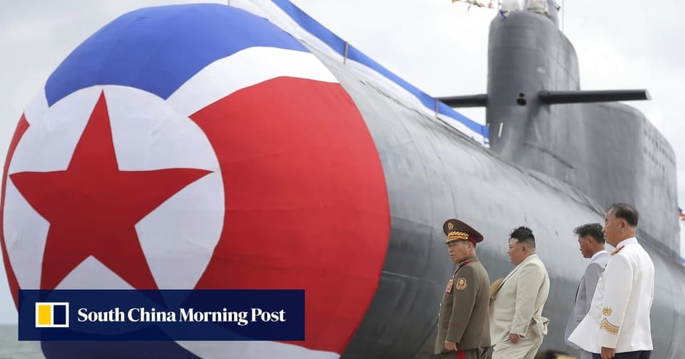

世界苦茶09月18日新闻 | 40条 | 中国限韩令松绑的标志演唱会被无限延期

中国限韩令松绑的标志演唱会被无限延期 | 网信办促停购英伟达芯片 | 欧盟被中国拒绝稀土出口 | 联合国预算削减15% | 以色列开始猛攻加沙 | 美联储宣布降息
苦茶数据
美元兑人民币：7.10（昨日7.10，前日7.11）
美元兑日元：147.36（昨日147.54，前日147.98）
上证指数：3831（昨日3872，前日3857）
标普500指数：6600（昨日6606，前日6615）
比特币：117339（昨日116752，前日115747）
布伦特原油：67.70（昨日68.37，前日67.59）
中国新闻
• 中石化川渝页岩气破纪录 ：中国石化在四川重庆的天然气基地再获重大进展。这家巨型能源化工企业星期三公布，部署在四川省资阳页岩气田的两口评价井，测试产量均超百万立方米，其中一口井试获日产气140.7万立方米，刷新中国页岩气测试产量最高纪录。据介绍，目前两口井所在的平台已投产三口井，单井稳定日产气超15万立方米，展示了四川盆地超深层页岩气效益开发的良好前景，对推动中国页岩气开发具有重要意义。此前，中国投入规模开发的页岩气主力层系为志留系，该井组产层为距今5.4亿年前的寒武系，是全球实现规模勘探最古老的页岩层系，是一种新类型页岩气。
• 李传良违法所得没收 ：外逃美国的黑龙江省鸡西市原副市长李传良涉嫌巨额贪腐，涉案资产逾31亿元人民币。法院星期三裁定，他的违法所得依法应予没收。据央视新闻报道，黑龙江省牡丹江市中级人民法院星期三对李传良违法所得没收一案进行公开宣判，裁定没收属于李传良贪污、受贿、挪用公款、滥用职权的违法所得及孳息。法院经审理认为，本案有证据证明李传良利用担任黑龙江省鸡西市财政局局长、鸡西市人民政府副市长等职务上的便利实施贪污、受贿、挪用公款、滥用职权的犯罪行为，并逃匿境外，被通缉一年后不能到案；检察机关申请没收的在案现金、房产、公司股权等财产及孳息属于违法所得，依法应予没收；利害关系人的相关异议和主张均不能成立。法庭遂作出上述裁定。
• 最北电气化铁路开工 ：中国最北电气化铁路改造工程开工，动车组将开进大兴安岭。据中新社报道，富裕至嫩江至加格达奇铁路改造工程星期三正式开工建设。作为中国最北电气化铁路，富加铁路北起黑龙江省大兴安岭加格达奇区，途经内蒙古自治区莫力达瓦达斡尔族自治旗、鄂伦春自治旗，以及黑龙江省嫩江市、讷河市、富裕县，终至齐齐哈尔市，是大兴安岭地区对外联系的唯一铁路通道。
• 青年失业率升至18.9% ：中国8月青年失业率升至18.9%，创下自2023年12月调整调查口径以来的最高水平，凸显当下依旧严峻的就业形势。中国国家统计局星期三公布的数据显示，8月城镇不包含在校生的16岁至24岁劳动力失业率为18.9%，较7月的17.8%上升1.1个百分点。随着高校毕业生集中进入就业市场，每年7月至9月的青年失业率往往升至年内新高，去年8月中国青年失业率为18.8%。今年中国高校毕业生规模预计达1222万人，同比增加43万人，就业市场压力巨大。
• 海南韩流演唱会延期 ：一场原定成为近十年来中国规模最大的韩国流行音乐演唱会，被无限期推迟，凸显出韩国娱乐业在重返中国市场时所面临的障碍。据彭博社报道，原定在海南一座可容纳4万人的体育场举行的梦想演唱会，原本被寄望成为韩国流行音乐行业的分水岭，届时将有多个团体登台演出。这场活动被视为北京长期以来对韩国艺人的非正式禁令可能终结的信号。主办方本周宣布，演唱会已延期，但未公布新的日期或进一步解释。此前，韩国女子组合Kep1er也说，由于“不可避免的情况”，原定9月13日在福建福州的演出已被取消。 （翻評：限韓令到最後未能突破，當然與韓國最近倒向美國有關。）
• 中国与东盟往来增11.2% ：今年1至8月，中国大陆居民与亚细安国家人员往来人次同比增长11.2%。据中新社报道，区域移民治理政策研讨会星期三在江苏省连云港市召开。会上提到，1至8月，中国大陆居民与亚细安国家人员往来超2524.4万人次，同比增长11.2%。其中，中国大陆居民前往亚细安国家人员1450.5万人次，同比增长3.7%，出境事由以旅游观光、探亲访友等为主；亚细安国家入境中国大陆1073.9万人次，同比增长27.5%，其中免签入境中国大陆905.4万人次，同比增长28.4%，入境事由以旅游观光、商务活动等为主。
• 国资央企推进专业化重组 ：中国国务院国资委副主任李镇说，将大力推动国资央企战略性专业化重组整合。据《证券时报》报道，国新办星期三举行“高质量完成‘十四五’规划”系列主题新闻发布会。李镇说，“十四五”期间，国资央企大力推进布局优化结构调整，以市场化的方式重组了六组10家企业，新组建设立九家中央企业。
• 拟明确未保条例第20条 ：网信办就《未成年人网络保护条例》第20条的认定办法征求意见。触发第20条的两种要件中，“未成年人用户数量巨大”定义为：未成年注册用户数1000万、或者月活用户100万；“对未成年人群体具有显著影响”认定因素包括：未成年登录频次、使用时长、喜爱程度、消费金额高；信息内容大量涉及或面向未成年人；3年内涉未成年人情况突出，受到社会关注；在垂直领域排名靠前等。网信办牵头各部委指导设立“认定咨询委员会”，每3年开展一次，先提出自评名单、要求业者自评，再向社会公布认定名单征求意见稿30日，最终审定。
• 九一八前在华日侨警惕 ：日媒报道，“九一八”临近，在中国的日本侨民担忧社会上反日情绪重燃，日本人学校也加强警备。据日本共同社报道，以侵华日军731部队为题材的电影《731》星期四上映，当天也是深圳日本人学校男生被杀害一周年的日子。一名现居深圳的50多岁日本籍男性称：“很担心会出现受电影影响，误以为在反日的名义下做什么都可以的人。”一名51岁的日企员工说：“失业者众多。曾有人知道我是日本人后向我寻衅。”另一名现居深圳的日本男性称：“为了保护家人，只能言行更加谨慎。”
• 韩外长访华商讨习出席APEC ：韩国外长赵显星期三说，他将在访问北京期间，讨论中国国家主席习近平10月底出席韩国主办的亚太经合组织峰会一事。据路透社报道，赵显在启程前往中国进行为期两天的访问之前说，他将听取中国官员关于朝鲜领导人金正恩最近访问北京参加九三阅兵的情况。赵显向记者说：“中国是我们的重要邻国，两国是战略伙伴。”他补充说，他将与中国外长王毅讨论如何进一步深化合作。
亚太印太新闻
• 日经纪人猥亵未成年被捕 ：日本演艺经纪公司“GO little by little”的39岁负责人鸟丸宽士因涉嫌长期猥亵旗下未成年女偶像，被当地警视厅以违反《儿童福利法》的罪名逮捕。这名女偶像在14岁加入公司后，15岁起遭到他的猥亵。然而，由于担心反抗会影响自己的偶像生涯，她隐忍了多年，直到今年2月才鼓起勇气报警。根据“富士新闻网”报道，鸟丸涉嫌在2021年4月至2022年10月期间，明知受害少女未成年，仍在东京都内的酒店对其进行至少12次猥亵行为。鸟丸起初会告知受害人“有要事商量”，然后以“要拍摄出售给粉丝的照片”为借口约她出来。当受害人抵达现场后，鸟丸便要求她摆出几乎走光的姿势，拍摄不雅视频，并对少女猥亵。最后，鸟丸甚至毫不掩饰，直接发酒店房号要求女方前往。
• 朱立伦评台湾地位未定论 ：美国在台协会与美国国务院罕见提出“台湾地位未定论”，引发各方关注。台湾在野国民党主席朱立伦星期三说，台湾是属于“中华民国”的，“中华民国”拥有台湾主权，并称这是全民共同的认知。综合《自由时报》、镜新闻等台媒报道，AIT早前回应媒体提问时称，包括《开罗宣言》、《波兹坦宣言》及《旧金山和约》等文件，均未决定台湾最终政治地位。民进党秘书长徐国勇星期二也认同台湾主权未定的说法。朱立伦星期三出席活动前受访。对于媒体提问如何看待徐国勇认同台湾地位未定论，朱立伦回应称，台湾是属于“中华民国”的，“中华民国”拥有台湾主权，这是全民共同的认知。
• 泰柬边境拆网引纠纷 ：泰国说，在沙缴府发现有柬埔寨民众在柬军陪同下拆除边境铁丝网，泰军指责此举违反两国停火协议。《曼谷邮报》星期三报道，泰国陆军发言人温泰说，负责监督沙缴府柬埔寨边境地区的部队报告指出，星期二下午有一群柬埔寨平民和军队出现在考颂县班农雅考村。据称，这些柬国民众在柬军士兵陪同下，拆除两国边境区域的铁丝网围栏。温泰说：“事发区域的铁丝网围栏完全位于泰国主权领土内。这类行为违反停火协议，柬埔寨利用平民进行挑衅示威，柬军对此漠不关心。”
• 乐天信用卡大规模信息泄露 ：韩国拥有 960万多名用户的乐天信用卡公司日前遭遇黑客攻击，预计信息被泄用户数最多恐达数百万人，远超预期。公司代表曹佐镇最早将于本周内向公众致歉，并公布补救方案。据韩国金融部门和信用卡行业17日消息，乐天信用卡公司和金融部门正在调查被泄信息情况和受害规模等具体情况，调查接近尾声。经查发现，被泄数据量恐远超乐天上报的1.7GB，涉及用户规模可达上百万人。金融监督院日前在向国会议员姜旻局办公室提交的报告中指出，暂且推测被泄信息包括在线支付等信用卡信息。此言暗示院方不排除用户个人信息被泄露的可能性。
科技新闻
• 世贸警告，AI或推贸增四成 ：世界贸易组织警告称，人工智能可能在2040年前将商品和服务贸易额提升近40%，但如果没有适当的政策，可能加剧经济差距。路透社报道，根据世界贸易组织星期三发布的年度报告，到2040年，由于贸易成本的降低和生产力的提高，可能推动贸易和GDP大幅增长，预计全球贸易在各种情景下将增长34%至37%；而全球GDP也可能增长12%至13%。世贸组织副总干事希尔分析说：“在日益复杂的贸易环境中，人工智能可能成为贸易的亮点。”
• 中芯测国产DUV攻7纳米 ：英国媒体称，中国晶片制造巨头中芯国际正测试中国首款国产先进晶片制造设备，以在人工智能处理器生产方面挑战西方竞争对手。《金融时报》引述两名知情人士报道，中芯国际正测试一台采用浸没式技术的28纳米中国国产深紫外光刻机，并将利用“多重曝光技术”生产7纳米晶片，也可能以较低的良率生产5纳米晶片，但无法进一步推进到更先进制程。这款深紫外光刻机由国资背景的上海起步公司宇量昇制造。知情人士透露，虽然宇量昇设备的大部分组件已实现中国国产化，但部分零部件仍需进口，公司正努力推进所有部件国产化。
• 网信办促停购英伟达芯片 ：路透社转述英国《金融时报》星期三报道，中国互联网监管机构已指示国内规模最大的科技公司，停止购买美国科技巨头英伟达的所有人工智能晶片，并终止现有订单。报道引述三名知情人士透露，中国国家互联网信息办公室本周已指示字节跳动和阿里巴巴等公司，终止对英伟达RTX Pro 6000D的测试并取消相关订单。彭博社8月中曾引述知情者称，中国有关部门敦促本土企业避免使用英伟达H20晶片，尤其是跟政府相关的用途。
• 美议员质询Futurewei與英偉達同楼 ：美国国会议员要求中国科技巨头华为的子公司Futurewei解释，公司为何与美国晶片巨头英伟达在硅谷共用办公楼。此事也将英伟达卷入一项涉及中国间谍活动的调查。据彭博社报道，由众议院中国问题特别委员会的共和党籍主席穆勒纳尔和民主党籍首席成员克里希纳穆尔蒂共同起草的信件显示，Futurewei在加州圣克拉拉的英伟达总部，曾有长达十年的共同办公历史。议员指出，在英伟达于2024年完全接管这一园区前，Futurewei曾持有园区三栋办公楼的主要租赁权。
• 人民日报称，依法审批TikTok ：中国官媒《人民日报》星期三在要闻版刊发评论文章，称中国坚决维护国家利益和中资企业合法权益的原则立场没有变，将依法审批短视频平台TikTok所涉及的技术出口、知识产权使用权授权等事宜。这篇署名“钟声”的评论称，当地时间9月14日至15日，中美双方在西班牙马德里举行会谈。双方以两国元首通话重要共识为引领，就双方关注的经贸问题进行坦诚、深入、富有建设性的沟通，就以合作方式妥善解决TikTok问题、减少投资障碍、促进有关经贸合作等达成基本框架共识。评论称，TikTok问题是此次会谈的重要内容，以合作方式妥善解决相关问题是此次会谈取得的积极进展。中国一向反对将科技和经贸问题政治化、工具化、武器化，绝不会以牺牲原则立场、企业利益和国际公平正义为代价寻求达成任何协议。
财经新闻
• 欧盟企业申请中国稀土出口许可证再遭延迟： 欧洲企业报告称，获得中国稀土出口许可证再次遭遇延迟，而不到两个月前，欧盟领导人在访问北京期间赢得了解决这一问题的承诺。中国欧盟商会周三表示，自四月中国实施管制措施以来，会员公司已就 140多份稀土出口许可证申请寻求其帮助，其中只有约四分之一的申请得到解决。中国欧盟商会主席彦辞表示：“我们有许多会员公司目前正因这些瓶颈而遭受重大损失。”彦辞表示，在欧盟委员会主席冯德莱恩和欧洲理事会主席科斯塔七月访问北京并与中国国家主席习近平会面后，这些问题曾短暂缓解，但随后再次恶化。“这种情况并没有消失，”他说道。
• 发放第三批成品油出口配额 ：消息人士透露，中国已发放今年第三批涵盖汽油、航空煤油和柴油的成品油出口配额，总量为839.5万吨，略高于去年同期的800万吨。据路透社星期三报道，截至目前，中国今年三类成品油的累计出口配额达4019.5万吨，与去年同期的4100万吨大致持平。消息人士说，中国国有石油巨头中石化和中石油在这次配额中获得总计约605万吨，占比约六成。民营炼厂浙江石化则获配62万吨。
• 共和党现关税分歧 ：美国共和党内部对特朗普贸易政策的焦虑本周在众议院公开浮现，一小部分议员试图反击总统标志性的对外经济策略，并要求在关税制定上拥有更大话语权。这场异议虽持续时间不长，却揭示了党内在关税问题上的裂痕，而其经济影响可能成为明年中期选举的核心议题。尽管法律上国会拥有关税制定权，但特朗普近年来通过动用紧急授权，已对数十个贸易伙伴单方面加征关税，而众议院共和党领导层对特朗普的言听计从使反对派更难就关税问题发起投票挑战。
• 美联储再降息25基点 ：美国联邦储备委员会结束为期两天的货币政策会议，宣布将联邦基金利率目标区间下调25个基点到4.00%至4.25%之间。这是美联储2025年第一次降息，也是继2024年三次降息后再次降息。新华社报道，美联储决策机构联邦公开市场委员会星期三在会后发表声明说，近期指标显示，美国上半年经济活动增长放缓，就业增长放缓，通胀率有所上升。鉴于风险平衡变化，委员会决定将联邦基金利率目标区间下调25个基点。美国总统特朗普自今年1月上任以来持续施压美联储降息。
• 奇瑞赴港IPO募资逾90亿 ：中国汽车制造商奇瑞汽车计划赴港上市，筹资高达91.5亿港元，可能成为香港交易所今年最大规模的首次公开募股。据路透社报道，星期三公布的招股说明书显示，奇瑞汽车将发行2.974亿股股票，定价区间为每股27.75港元至30.75港元。最终定价将在9月24日公布，股票预计9月25日开始交易。报道称，这次IPO将成为港交所今年最大的一宗IPO。今年以来，香港资本市场的融资活动主要由已在中国大陆上市企业的再融资主导。
• 欧盟商会吁刺激消费解内卷 ：中国欧盟商会呼吁中国政府着手解决价格战等问题，并通过刺激消费来实现供需平衡。据彭博社报道，作为欧洲在华最大商业游说团体的中国欧盟商会星期三发布声明称，虽然中国消费正在增长，但制造业产出增长更快，造成了供需失衡。商会指出，“内卷、库存增加、利润率承压、资产利用率下降以及出口压力，都是这种不匹配的自然结果。”
• 万科9月16日晚间发布公告称，第一大股东深铁集团向公司提供不超过20.64亿元借款，用于偿还公司在公开市场发行的债券本金与利息： 据统计，这是深铁集团年内第九次向万科提供股东借款，若算上本次借款，深铁集团今年向万科提供的借款总金额近260亿元。万科官网17日变更了组织架构、管理团队信息。万科此番组织及人事调整的重要变化是撤销了开发经营本部。万科将该部门下的“5+2+2”架构，调整为划分16个地区公司，由总部直接管理城市公司。
俄乌战争
• 美乌设联合投资基金 ：乌克兰和美国将各自向一个联合投资基金投入7500万美元，该基金是美乌达成矿产协议的一部分。路透社报道，乌克兰总理斯维里登科星期三发声明说，美国国际开发金融公司已作出7500万美元的试点投资承诺，乌克兰将进行对等出资。斯维里登科说，计划在2026年底前通过与美国联合投资基金实施三个大型项目。
• 外检称纳瓦尔尼遭投毒 ：俄罗斯反对派领导人纳瓦尔尼的妻子说，外国实验室从她丈夫身上获取的生物样本进行检测，表明他是遭毒害身亡的。法新社报道，纳瓦尔尼的妻子纳瓦尔纳娅星期三说，丈夫的盟友成功获取，并安全地将纳瓦尔尼的生物样本转移到国外，而两个国家的实验室得出结论显示，纳瓦尔尼是被杀害的。“具体来说，是中毒。”不过，她没有透露采集了哪些样本和分析结果的细节，但她呼吁实验室独立公布结果，并说明他们认为纳瓦尔尼服用了哪种毒药。
• 俄白“西部—2025”军演闭幕 ：俄罗斯和白罗斯的“西部—2025”联合战略演习闭幕，俄总统普京说，多达10万军人参与演习。美国代表团曾到场观摩。综合外电报道，俄白联合军演星期二闭幕，普京当天到俄下诺夫哥罗德州穆利诺射击场视察，并向受邀参加演习的印度、伊朗等外国军队致意。普京在讲话中提到，这次演习于12日至16日在俄罗斯和白罗斯的41个陆海训练场举行，总计10万名军人、约1万套武器装备系统和超过200艘水面舰艇、潜艇等参加演习。
• 在特朗普施压下，欧盟将提议加快逐步停止从俄罗斯进口石油： 在美国总统唐纳德·特朗普的压力下，欧盟委员会主席乌尔苏拉·冯德莱恩于9月16日宣布，欧盟委员会将提议比最初计划更早地逐步停止从俄罗斯的能源采购。冯德莱恩在与特朗普通话后于X日宣布了这一消息。她表示，此次通话的重点是“加强我们共同努力，通过额外措施加大对俄罗斯的经济压力”。目前尚未公布拟议逐步停止采购的具体时间表。根据目前的计划，欧盟的目标是在2027年底前完全停止购买俄罗斯的能源。此前，特朗普表示，一旦欧洲盟友完全停止购买俄罗斯石油，他将对莫斯科实施更严厉的制裁。冯德莱恩在X网站上的帖子中表示，新的制裁方案将“很快”出台，并将针对俄罗斯的加密货币、银行和能源行业。
• 韩国称俄罗斯涉嫌帮助朝鲜建造核潜艇： 韩国正在调查有关俄罗斯向朝鲜提供核潜艇反应堆模块的报道。分析人士认为，俄罗斯此举极有可能，可能标志着平壤数十年来打造核动力海军的努力取得突破。韩国《中央日报》援引未具名政府消息人士的话说，据信莫斯科在今年上半年向朝鲜提供了两到三个模块，包括从退役的俄罗斯潜艇上拆除的反应堆堆芯、涡轮机和冷却系统。韩国总统李在明的首席安全顾问魏圣洛周三告诉记者，政府无法证实此类情报的存在。但分析人士表示，鉴于莫斯科和平壤之间日益密切的军事关系，尤其是在俄罗斯持续不断的乌克兰战争背景下，这种转让虽然具有挑衅性，但并非不切实际。
国际新闻
• 宾州枪击三警殉职 ：美国宾夕法尼亚州南部发生一起枪击事件，一名枪手向五名警察开枪，造成警员三人死亡、两人重伤。枪手已经死亡。枪击事件发生在星期三，地点在宾夕法尼亚州东南部约克县科多鲁斯镇，当时遇袭的警察正返回先前执行警务工作的现场。宾夕法尼亚州警察部队首长克里斯托弗·帕里斯告诉记者：“五名执法人员遭枪击，其中三人死亡。”他补充道，两名警官情况危急，送往医院抢救。
• 欧盟拟停以色列贸惠 ：欧盟提议暂停以色列的贸易优惠，作为应对加沙不断恶化的人道主义局势的新一轮制裁措施。彭博社报道，欧盟委员会星期三提议暂停与以色列的部分协定，这意味着以色列将与其他未与欧盟签订贸易协定的国家征收相同的关税。一名高级官员说，暂停措施将适用于约37%的商品贸易总额。其余产品将根据世界贸易组织的条款享有零关税。
• 以军加沙城攻势升级 ：以色列9月16日对加沙城发动地面攻势，并多次空袭也门荷台达港。以色列国防军表示，以军已大幅扩大在加沙城的行动范围，两个师的部队正在加沙城作战，作战行动已扩展至加沙城中心地带。目前以军正在扩大战果，距离战争结束的方向“更近一步”。以军发言人戴弗林称，加沙城是哈马斯军事和政治力量的中心枢纽，也是其主要据点，预计地面攻势可能持续数月。以军“精准打击”威胁以色列安全的哈马斯军事目标。以色列继续呼吁平民远离加沙城战区。当地居民徒步或乘驴车等交通工具离开。但也有居民因没有资金或无处可去而留在原地。以安全官员称，截至16日早间，已有30万至35万人逃离加沙城，前往加沙南部，但仍有超过50万人留在加沙城内。巴勒斯坦卫生部门称，当天的袭击造成至少75人死亡，其中多数遇难者位于加沙城。联合国巴勒斯坦被占领土和以色列问题独立国际调查委员会16日发布报告指出，以色列在加沙对巴勒斯坦人犯下种族灭绝罪行。以色列否认指控，称报告“可耻”且“虚假”。消息人士称，部分以军军官担心袭击加沙城会危及剩余人质，以军总参谋长埃亚勒·扎米尔敦促总理内塔尼亚胡寻求停火协议。卡塔尔外交部发言人安萨里说，加沙停火谈判目前并不现实，在以色列企图暗杀谈判代表并轰炸调解国的情况下，调解毫无意义。卡塔尔埃米尔塔米姆16日会见到访的美国国务卿鲁比奥讨论以色列袭击多哈事件，报道没有透露相关细节。也门西部港口城市荷台达16日遭以色列12次空袭。当地目击者说，以色列战机轰炸了该港口的数个泊位，引发大火。胡塞武装说，这次空袭导致多名港口工人受伤，一些设施被摧毁。以色列国防军说，袭击了胡塞武装在荷台达港的一处军事基础设施，称该港口被用于转运来自伊朗的武器。胡塞武装称，防空系统已启动应对袭击，并给以色列飞机“造成了极大的混乱”，迫使部分飞机在袭击前离开也门领空。胡塞武装还向以色列发射了一枚导弹作为回应，但被以色列拦截。
• 近4.8万人逃离加沙城 ：联合国人道主义事务协调厅说，随着以色列升级在加沙地带加沙城的军事行动并命令当地民众撤离，更多巴勒斯坦人逃离家园，最近两天已有将近4万8000人从北向南迁移。新华社报道，联合国人道主义事务协调厅星期二晚间发声明说，过去24小时，以色列军队持续炮击和空袭加沙城内外，并宣布扩大地面行动，再次将加沙城列为“危险战区”并下令当地民众往南撤离；协调厅观察到，自8月中旬以来，已有超过19万人逃离加沙城，其中许多人选择步行。声明指出，流离失所的家庭通常由妇女和老年人带领，逃难者在酷热中步行长达九个小时，经常赤脚，还带着受伤儿童。
• 内塔尼亚胡为袭击多哈辩护 ：以色列空袭卡塔尔首都多哈招致国际批评，但以色列总理内坦亚胡说，卡塔尔与哈马斯存在关联，以色列对卡塔尔境内哈马斯官员的袭击行动完全正当。法新社报道，内坦亚胡在星期二的记者会上说：“卡塔尔与哈马斯有联系，它支持哈马斯、庇护哈马斯、资助哈马斯……它本可以动用强大影响力，却选择袖手旁观。”他进而表明：“因此，我们的行动完全正当。”
• 澳与巴新推迟防务条约 ：澳大利亚与太平洋最大岛国巴布亚新几内亚，未能如期签署备受期待的共同防御条约。综合路透社和法新社报道，澳大利亚总理阿尔巴尼斯星期三访问巴布亚新几内亚，与巴新总理马拉佩举行防务会谈。外界此前普遍预测，两国当天会在莫尔兹比港签署共同防御条约，但双方发表联合公报，推迟条约签署。
• 联合国拟削减预算15% ：由于美国出资前景不明和长期资金流动问题等因素，联合国秘书长古特雷斯提议，2026年将联合国常规预算削减15%。法新社报道，古特雷斯在星期二致成员国及联合国工作人员的信函中宣布，2026年将联合国常规预算规模削减15%以上，相当于约5亿美元；预算覆盖的联合国工作人员编制，则缩减19%。古特雷斯说，削减措施带来的影响，预计波及联合国三大支柱领域，即和平安全、人权和可持续发展，但针对最不发达国家的项目不会受牵连。
• 杀CEO案恐怖罪名被驳 ：美国地方法官驳回针对枪杀联合健康公司高管案嫌犯曼吉奥内的两项重罪指控，但他仍受到二级谋杀罪和其他八项刑事指控。去年12月，曼吉奥内在纽约曼哈顿街头近距离开枪，打死美国最大医疗保险公司联合健康保险公司的首席执行官汤普森。他逃窜五天后，在宾夕法尼亚州落网，后被引渡回纽约。纽约州法官卡罗星期二裁定，检方未能向大陪审团提供充分证据证明，曼吉奥内实施犯罪时，存在恐吓健康保险业从业人员，或影响政府政策的意图，而这些因素是认定谋杀行为构成恐怖主义性质的必要条件。
• 美英签署科技繁荣协议 ：英国与美国达成科技协议，旨在加强人工智能、量子计算和民用核能领域的合作。以微软为首的美国顶尖企业，承诺向英国投资300多亿英镑。路透社报道，美国总统特朗普再次访问英国之际，两国达成“科技繁荣协议”，内容包括共同开发医疗健康人工智能模型、拓展量子计算能力、优化民用核能项目。英国表明，这些合作可促进两国经济增长、科学研究及能源安全。英国首相斯塔默面临提振经济增长的压力。他说，与美国的科技协议有望塑造大西洋两岸数百万民众的未来，实现经济增长和安全保障。